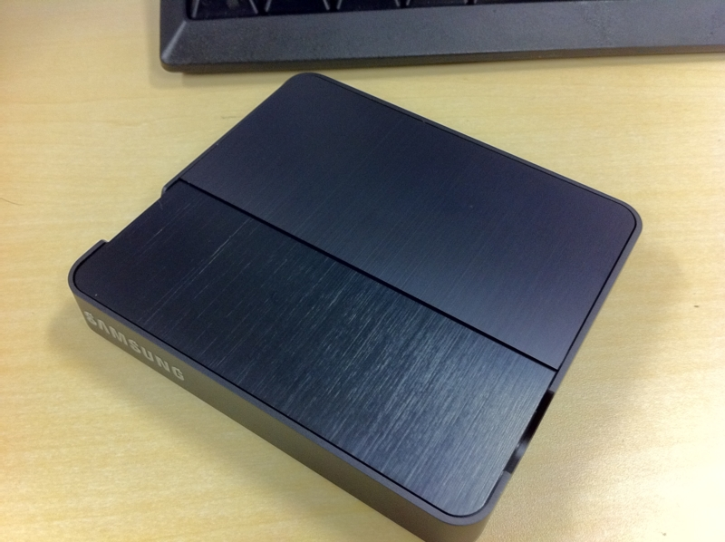
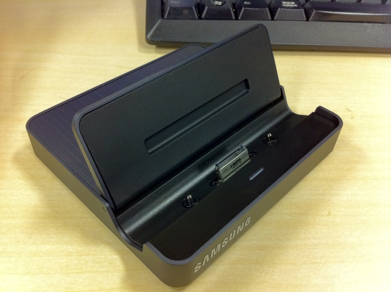
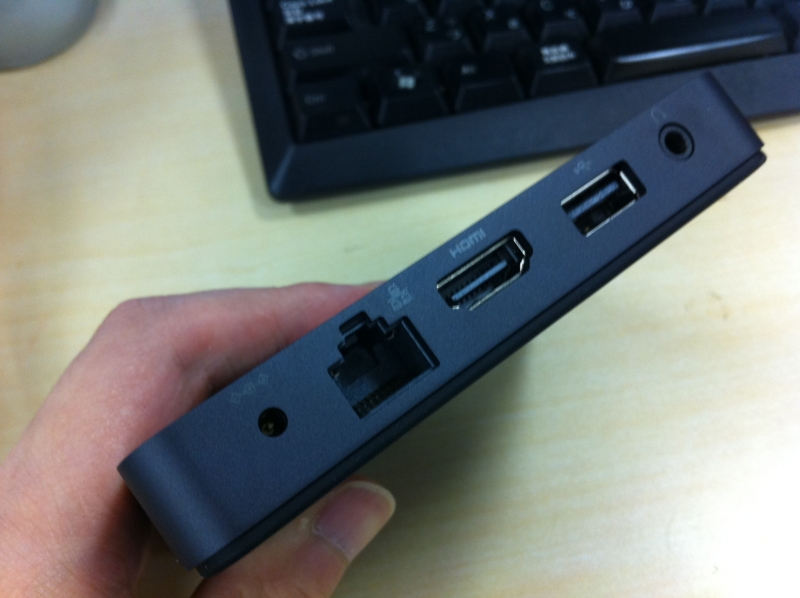
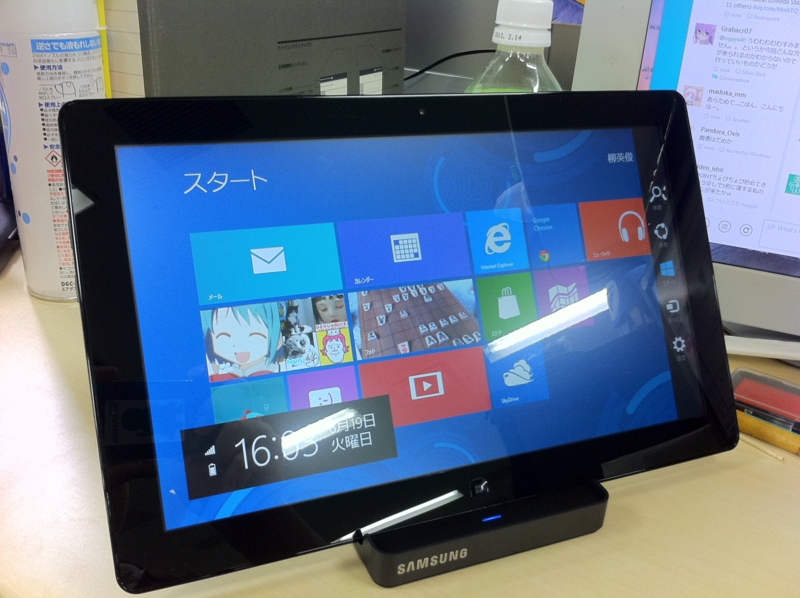

S7S のクレードルが ｷﾀ━━━━(ﾟ∀ﾟ)━━━━!!
執筆日時：
Samsung Series 7 Slate の開封式 - だるろぐ のとき、「12,000円でクレードル（ドック）を付けますよ」と言われたのだけど、買ったとして使うのかどうか分からなかったので、結局は買わなかった。けれど！ やっぱ要りますわ、クレードル。家に帰った時、ポンと置くところがあるだけでもかなり違う。あと、クレードルには有線LAN/HDMI出力が付いているのもポイント。家ではデュアルモニターで使いたい！ なんていうとき、クレードルは必要なのだ。

Samsung Series 7 Slate Pc Dock
- 出版社/メーカー: Samsung
- メディア: Personal Computers
- この商品を含むブログを見る
S7S用のクレードル（AA-RD5NDOC/US）は米Amazon（略してアメゾン）で購入。本体は海外発送してくれないのだけど、クレードルは発送してくれるようだ。価格は税金など諸々込みで8,000円ちょっと。円高バンザイ＼(^o^)／
日本のAmazonよりもちょっとだけワイルドな梱包で無事到着。

クレードルの接続部分は開閉式になっていて、使わない場合はフタをしておける。底面は滑りにくく加工されていて、多少の揺れではビクともしない感じ。

背面のポート類。有線LAN×1、USB×1、HDMI×1、ヘッドフォン出力×1、電源×1。ただ、有線LANはOFFにしておいたほうがいいらしい。
@daruyanagi ドックつなぎっぱなにすると有線LANのRealtecがDeep Sleepしてしまうかもしれないので、「このデバイスの電源をオフにできるようにする」をOffにした方がいいかもです。bit.ly/MkTzB9
— Kaoru Nakajimaさん (@kaorun) 6月 19, 2012
接続した様子。うむ、満足！ 早速家に帰ってデュアルモニターにしてみたけれど、本体に十分なスペックがあるせいか、デスクトップがわりに使っても申し分ない感じ。メインPCは Windows 7、S7Sは Windows 8という体制で、当分は使い分けていこうかなと思います。